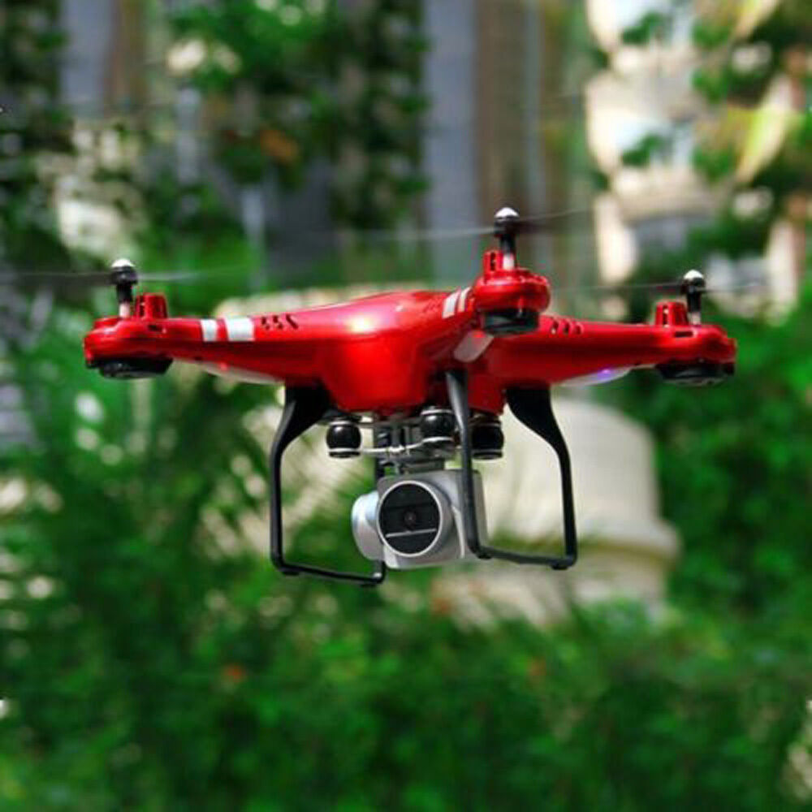
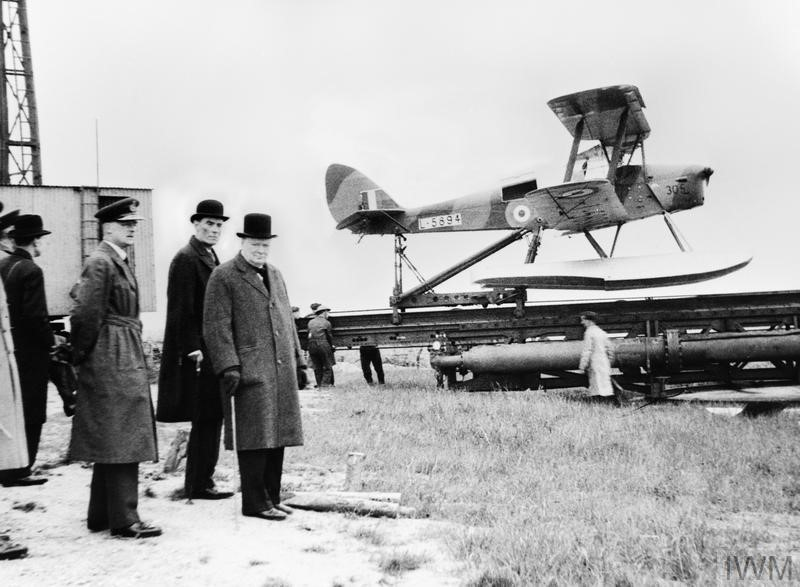
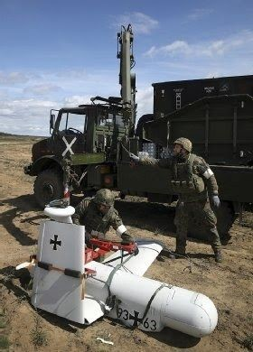

What is Drone??

A drone, in technological terms, is an unmanned aircraft. Drones are more formally known as unmanned aerial vehicles (UAVs) or unmanned aircraft systems (UASes). Essentially, a drone is a flying robot that can be remotely controlled or fly autonomously
through software-controlled flight plans in their embedded systems, working in conjunction with onboard sensors and GPS.
Who invented drone?

Reginald Denny and the Radioplane
The first large-scale production, purpose-built drone was the product of Reginald Denny. He served with the British Royal Flying Corps during World War I, and after the war, in 1919, emigrated
to the United States to seek his fortunes in Hollywood as an actor. Denny had made a name for himself as an actor, and between acting jobs, he pursued his interest in radio control model aircraft in the 1930s. He and his business partners
formed "Reginald Denny Industries" and opened a model plane shop in 1934 on Hollywood Boulevard known as "Reginald Denny Hobby Shops".
The shop evolved into the "Radioplane Company". Denny believed that low-cost RC aircraft
would be very useful for training anti-aircraft gunners, and in 1935 he demonstrated a prototype target drone, the RP-1, to the US Army. Denny then bought a design from Walter Righter in 1938 and began marketing it to hobbyists as the
"Dennymite", and demonstrated it to the Army as the RP-2, and after modifications as the RP-3 and RP-4 in 1939. In 1940, Denny and his partners won an Army contract for their radio controlled RP-4, which became the Radioplane OQ-2. They
manufactured nearly fifteen thousand drones for the Army during World War II.
The history of drones:

Many trace the history of drones to 1849 Italy, when Venice was fighting for its independence from Austria. Austrian soldiers attacked Venice with hot-air, hydrogen- or helium-filled balloons equipped with bombs.
The first pilotless radio-controlled aircraft were used in World War I. In 1918, the U.S. Army developed the experimental Kettering Bug, an unmanned "flying bomb" aircraft, which was never used in combat.
The first generally
used drone appeared in 1935 as a full-size retooling of the de Havilland DH82B "Queen Bee" biplane, which was fitted with a radio and servo-operated controls in the back seat. The plane could be conventionally piloted from the front seat,
but generally it flew unmanned and was shot at by artillery gunners in training. The term drone dates to this initial use, a play on the "Queen Bee" nomenclature.